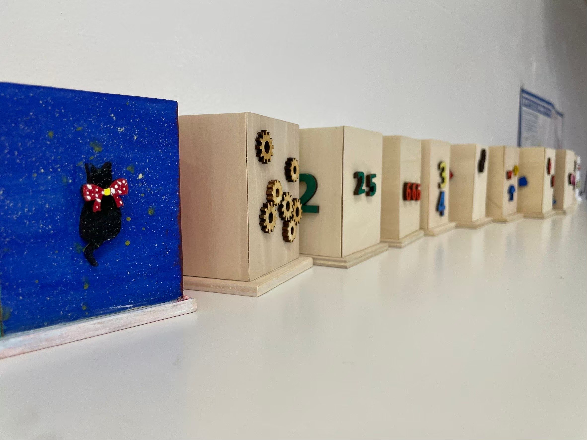

12月に放課後等デイサービスあさひ学苑IT校様が、神奈川工科大学に遊びに来てくれました！
12月に放課後等デイサービスあさひ学苑IT校様が、神奈川工科大学に遊びに来てくれました。
今年度第3回目となる、今回は大学探検とKAIT工房での木工体験を10人以上の子供たちと一緒に行いました。
メインとなる木工体験ではペン立てを作りました。
側面となる4枚の長方形の板と底となる正方形1枚の板をボンドを塗り重ね合わせペン立てを作ります。
出来上がったペン立てにそれぞれ選んだパーツに絵の具で色をつけて飾りをつけをして完成です。
子供たちは長方形の板を正方形に組み合わせるのに苦戦していましたが、スタッフと協力しながら一生懸命作っていました。
飾り付けでは、自分が選んだパーツに好きな色や季節の色、パーツに絵を描くなど色とりどりの塗り方でパーツをデコレーションしていました。
色とりどりのパーツをペン立てにデコレーションして世界に一つのオリジナルペン立てを作っていました。
木工体験の後は、大学探検です。
大学の図書館や、食堂を子供たちと探検しました。
その中でも子供たちが興味を示したのはすりガラス越しから見えるペッパーくんが1番記憶に残ったそうです。
後日あさひ学苑の子供たちはペンケースの側面にも色を塗ってくれたみたいです。
